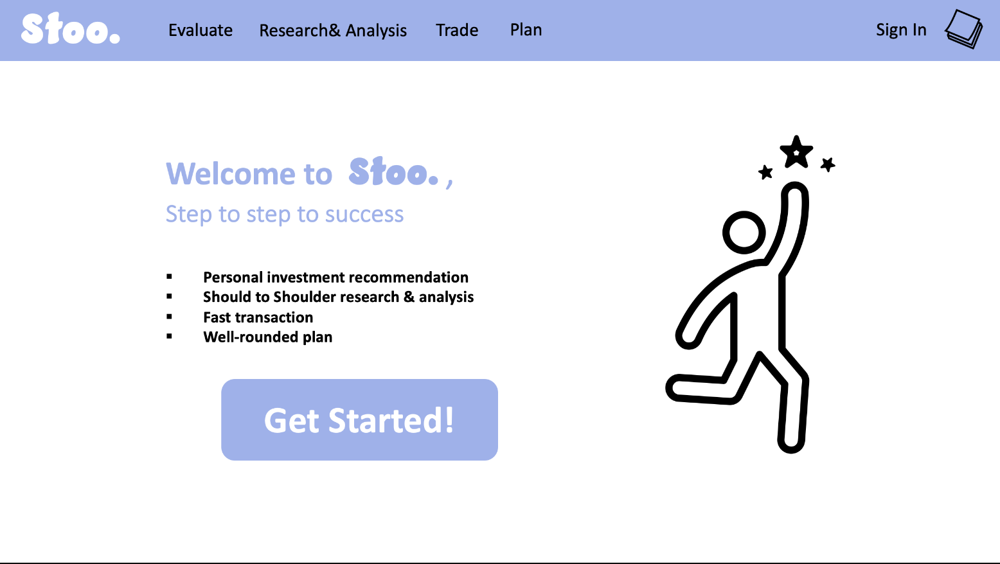

Senior Project: Stock Recommendation based on MBTI
1. Introduction
I am a big thinker, I am a dreamer. I want to work hard to be financially strong and free for myself, my family, and others. Besides working hard at my career, I know financial management is the key of this success. Creating multiple passive income should be consistently worked on. I am interested in taking this time in researching and learning about how I can apply my data science skills into investment and develop my own investing plan. I started investing from Robinhood a few years ago where thousands of stocks, ETFs, funds. I was very much confused and not sure what to invest, maybe that is their marketing strategy.
There are many companies in different fields that have great potential. This is a project which I help myself to find some companies that I would like to dig deep, research, and invest in. I will generate some of the stocks that people will be interested in research depending on their personality type (MBTI), preference and passion in life.
2. Problems
My step by step plan for this project is 1) to collect stocks datasets; 2) split the stocks with groups according to the selected features using an unsupervised clustering model; 3) match each clustering group with MBTI (16 personalities test); 4) show wished stocks based on the input MBTI; 5) then build a website to input MBTI and show outcome; 6) show data visualization of those stocks.
I found a S&P 500 dataset about the top 500 companies of the US. I tried wrangling them and fill in the data that was missing. I also tried dropping those stocks that contain missing data, but I have not found which way is the best to predict the data. I have tried several models, such as spicy.cluster.hierarchy, cosine_similarity, kmeans clustering, etc.
I am also building a stock watch list within S&P 500 to figure out the best way to find stock efficiently. I am also reading some books and watching banker/news YouTube channels to learn about the market and finance knowledge.
3. Summary
The more I learned about investment, the more I knew what I wanted to build in this project. Besides building a model, I want it to be presentable. And, I am constantly adding more tasks in this project and wishing to build more. My struggle is to stay focus on one small part of this project, then move to the next one. Plus, I found out I was running out of time. I decided to build a prototype of my website while writing a website using a python package called django. 